北京大学深圳研究生院团委
薪火相传 · 先进青年群团组织
共青团北京大学深圳研究生院委员会，是在北京大学深圳研究生院党委领导下的学院先进青年的群团组织，是开展深研院共青团工作的主责部门。秉承"爱国、进步、民主、科学"的优良传统，弘扬"勤奋、严谨、求实、创新"的校风学风，积极配合学院育人中心工作，有力助推青年成长成才。团委负责指导研究生会、学生社团、基层团组织开展各项校园文化活动，组织下设9个职能部门。
组 织 架 构
深研院党委
深研院团委
办公室
组织部
宣传部
文体部
社团部
学术科创部
社会实践部
志愿者部
青年研究中心
67个
学生团支部
2616名
团员
63个
学生社团
九 大 职 能 部 门
01 · OFFICE
办公室
负责协调团委各职能部门、各学生组织之间的工作，帮助、督促各部门高效落实工作。负责团委日常活动的经费预算及报销，处理团委机关公文，起草院团委工作总结、工作简报等重要文件；管理院团委各种物资，并定期组织开展团系统例会、团委例会、团队建设活动；负责统筹团委工作总结、换届选拔、骨干招募和接待等工作。
▸ 品牌活动
"青春南燕 团聚你我"团委迎新见面会暨破冰活动 · 共青团系统年度总结大会 · 学生干部换届竞选暨总结表彰大会
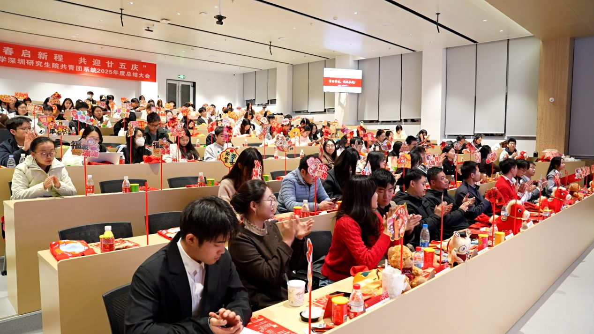
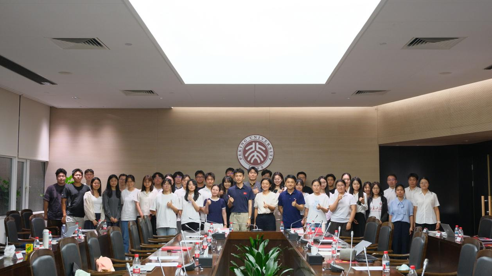
02 · ORGANIZATION
组织部
负责深研院基础团务工作，统筹管理各学院团支部，开展团组织推优入党、主题团日活动、五四团支部风采展、共青团系统评优表彰、团费收缴等基础团务工作；同时负责团校工作，定期开展学生骨干培训；展开时政热点、理论精神集中学习和青年大学习等理论实践工作，巩固基层团组织建设。
▸ 品牌活动
春季/秋季学期团支部工作交流会 · 团支部"对标定级"暨团支部书记述职评议大会 · 高级团校暨"青云计划"骨干培训班
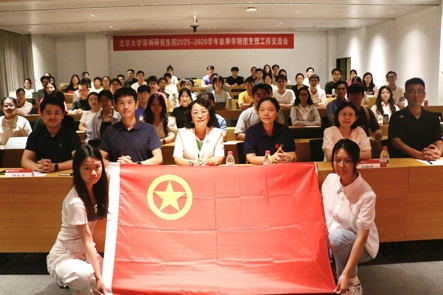
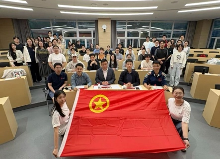

03 · PUBLICITY
宣传部
负责深研院青年宣传工作，以特色宣传活动服务全院青年思想引领工作。负责团委大型活动设计宣传推广；负责"青春南燕"团委公众号、视频号宣传阵地建设；围绕时政热点、特殊时间节点策划特色宣传活动；同时开展校园文化设计宣传推广，涵盖海报设计、活动摄影、视频制作等。
▸ 品牌作品
社团游园会展板 · 北大深圳青年讲堂主视觉海报 · 校运会入场式方阵卷轴 · 迎新晚会幕后纪实视频 · 走进中小学网大图
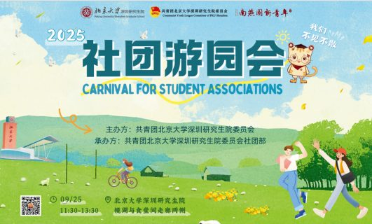
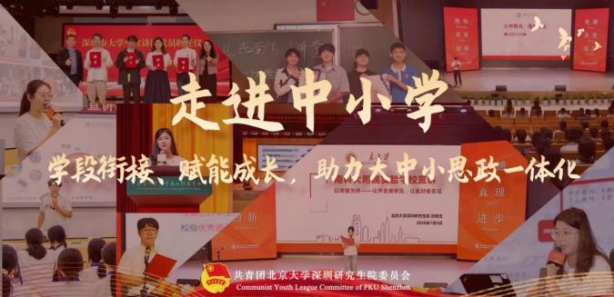
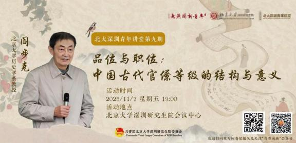
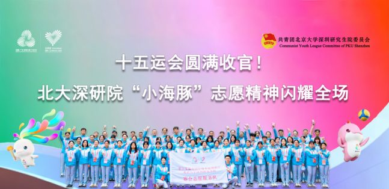
04 · CULTURE & SPORTS
文体部
以丰富学生校园文体活动、加强学院美育工作为核心，负责组织校本部运动会开幕式方阵表演、北大深圳青年讲堂等相关活动，协助开学典礼、毕业典礼相关工作等。品牌讲座如阎步克教授"品位与职位：中国古代官僚等级的结构与意义"、钱乘旦教授《风起云飞扬》解读等。
▸ 品牌活动
北大深圳青年讲堂系列讲座 · 北京大学春季运动会开幕式方阵 · 开学典礼/毕业典礼协助 · 青年知识竞赛 · 一二·九比赛
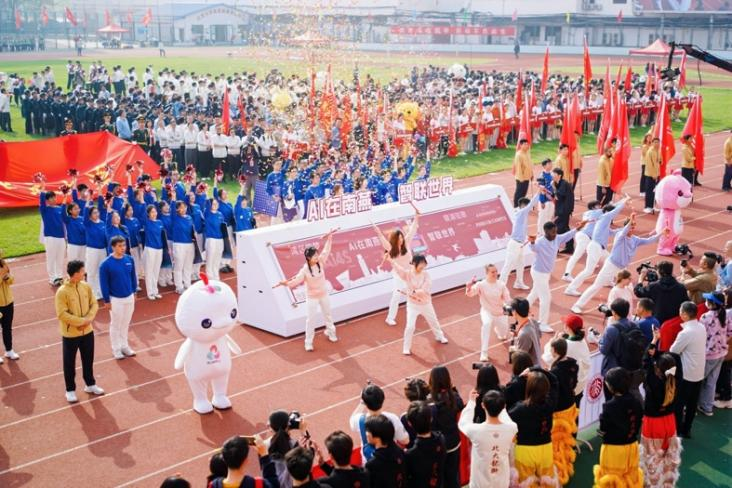
05 · CLUBS
社团部
以引导学生社团发展、服务学生社团运作、繁荣校园文化为工作目标，负责完善学生社团各项管理制度；加强社团日常管理、社团活动监管；主办学生社团大型活动，搭建展示平台；负责学生社团评优表彰、促进社团干部交流及对外交流等工作。
▸ 品牌活动
学生社团评优暨总结表彰大会 · 社团游园会 · 师生杯系列比赛
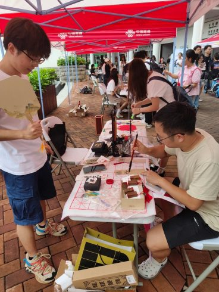
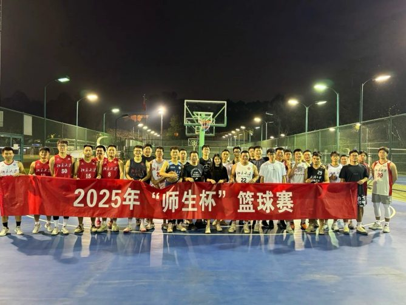
06 · ACADEMIC
学术科创部
负责提升和服务学生学术科研、科技创新和创业实践活动。全面负责北大深研院"挑战杯"赛事活动；管理服务我院学生辩论队；邀请学术界、商界、创业界等多界名师名家，开展学术科创类、职业发展类等青年文化交流沙龙活动，创造朋辈交流空间。
▸ 品牌活动
"挑战杯"赛事宣传暨培训 · 青年与未来交流沙龙（"从论文到产品：科研与产业之间的那道桥""AI浪潮下传统学科的生存与发展"）

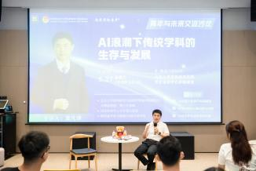
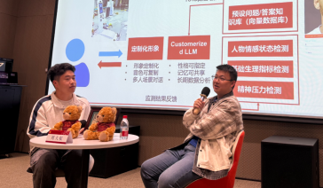
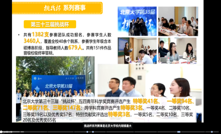
07 · SOCIAL PRACTICE
社会实践部
负责深研院学生社会实践平台建设，搭建青年学子了解社会、服务社会的桥梁。负责组织学生"笃行计划"暑假社会实践、社区实践、校外实践（名企参观、走进中小学）和学生集体实践教育活动，引导青年在实践中增长才干。
▸ 品牌活动
"笃行计划"暑期/寒假社会实践 · "走进中小学"系列活动 · 名企参观实践
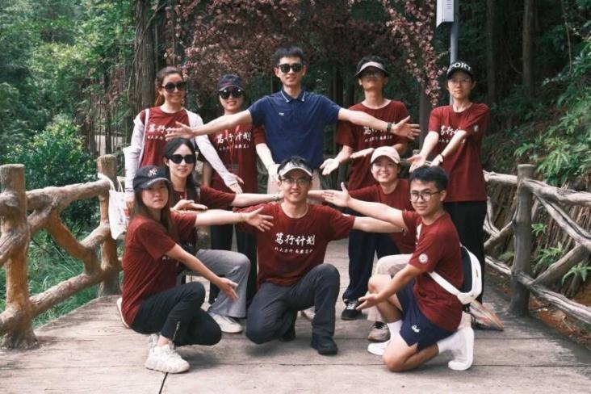
08 · VOLUNTEERS
志愿者部
负责志愿者的组织建设和沟通联络工作，负责指导青年志愿者协会各项事务及活动组织，以服务学校和社区为宗旨，时刻践行"予人玫瑰，手有余香"的志愿者精神。参与和组织大型赛事、社区服务、特殊群体关怀等多类型志愿活动。
▸ 品牌活动
第十五届全国运动会志愿服务 · "星语"品牌志愿活动 · X9赛艇联赛助威团志愿活动 · 青年志愿者协会系列活动
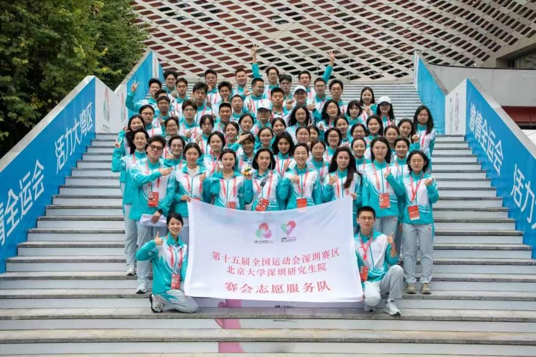
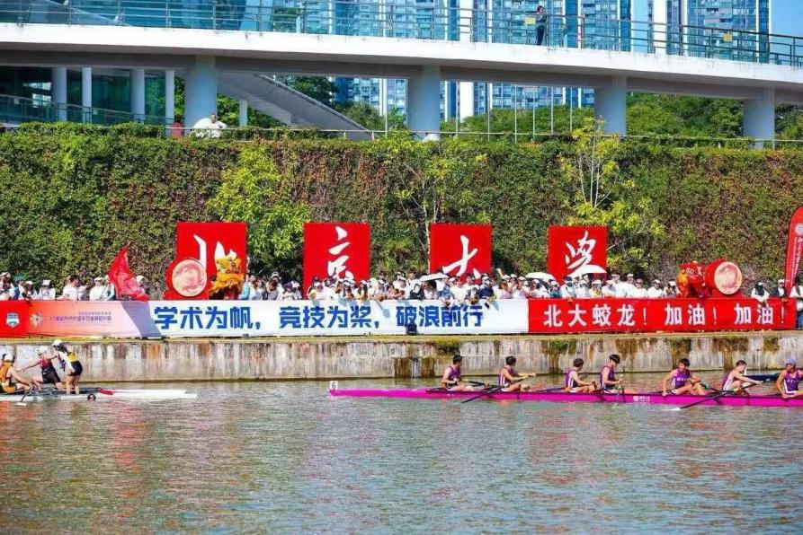
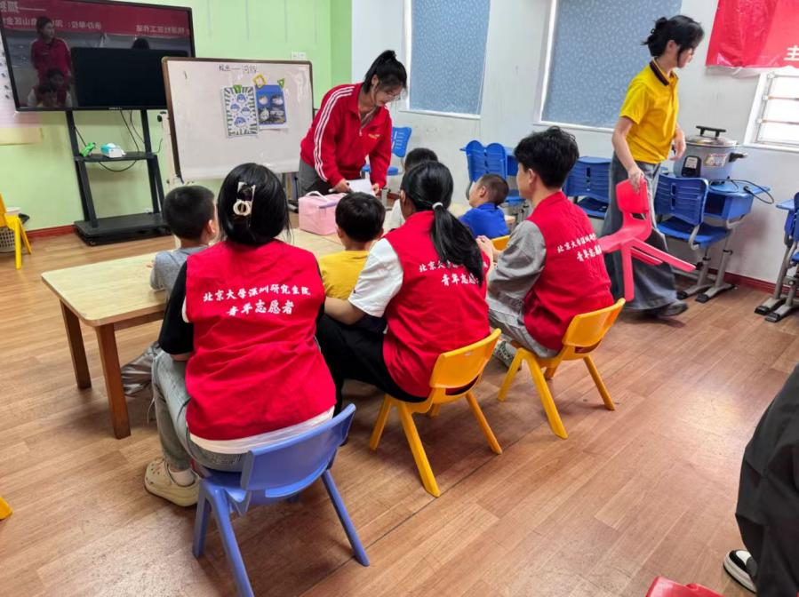
09 · YOUTH RESEARCH
青年研究中心
负责组织开展研究青年现状及发展趋势、加强学生思想政治引领等青年工作和共青团工作的相关主题研究，组织开展共青团和青年工作调研与实践，力求科学准确地把握新时代高校青年的思想变化和发展需求，为青年学生成长成才提供支撑与服务。
▸ 品牌活动
青年研究研讨活动 · 青年研究专题讲座 · 团学工作调研
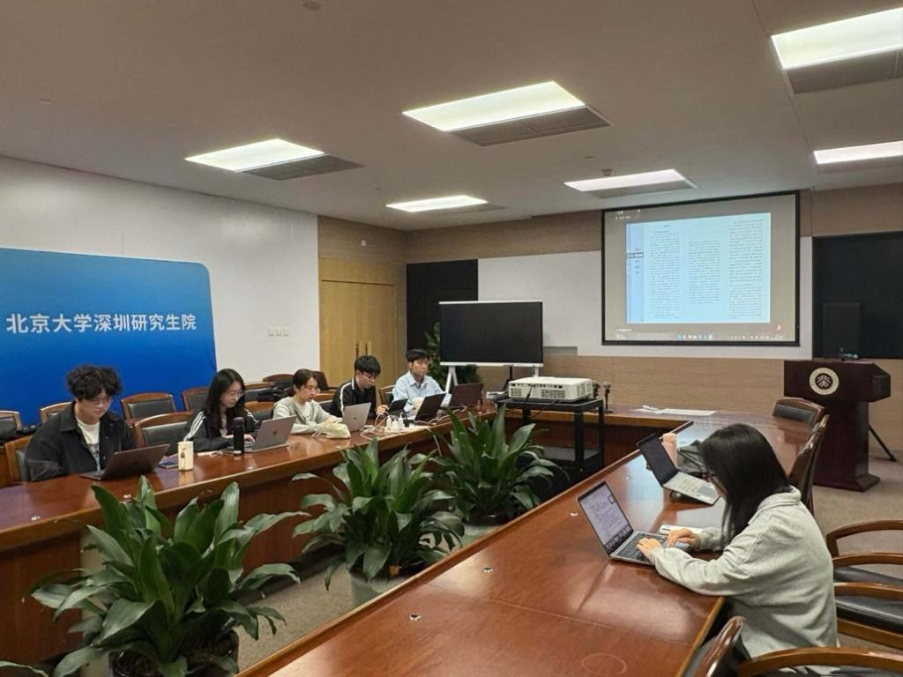
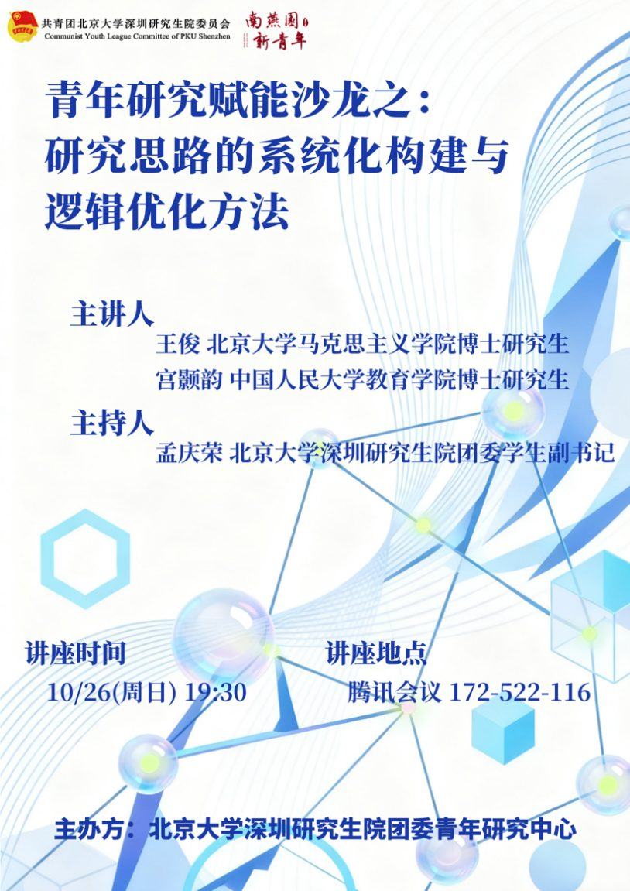
2025 年 品 牌 活 动 时 间 轴
1月 January
「笃行计划」寒假社会实践
Winter Social Practice

3–4月 March–April
「南燕研途，职达湾区」2025年职业发展系列活动
Career Development Series

3–5月 March–May
高级团校暨第二十期「青云计划」骨干培训班
Advanced Youth League School & Core Members Training

4月 April
「北大深圳青年讲堂」品牌系列讲座
PKU Shenzhen Youth Lecture

4月 April
北京大学春季运动会
PKU Spring Sports Day

5月 May
校园十佳歌手大赛
Top Ten Campus Singers Competition

6月 June
毕业典礼
Graduation Ceremony

7月 July
「笃行计划」暑期社会实践
Summer Social Practice

8月 August
开学典礼
Opening Ceremony

8月 August
2025年开学第一跑
2025 Academic Year First Run

9月 September
社团游园会
Carnival for Student Associations

10月 October
2025年庆国庆迎新生晚会
National Day Celebration & Freshman Welcome Gala

11月 November
「北大深圳青年讲堂」品牌系列讲座
PKU Shenzhen Youth Lecture

11月 November
十五运会志愿活动
15th National Games Volunteer Program

11月 November
第十六届趣味运动会
The 16th Fun Sports Meeting

12月 December
北京大学2026年新年联欢晚会
Peking University 2026 New Year Gala

下辖学生社团（63个）
📋 职能类（4）
- 学生艺术团
- 南燕新闻社
- 南燕之家
- 研究生党建研究会
🌱 公益类（4）
- 学生绿色+协会
- 学生青年志愿者协会
- 学生公益法律协会
- 学生流浪猫关爱协会
🚀 实践类（3）
- 学生创意创业协会
- 学生青年创业者协会
- 学生职业发展协会
⚽ 体育类（17）
- 学生足球协会
- 学生篮球协会
- 学生排球协会
- 学生乒乓球协会
- 学生羽毛球协会
- 学生网球协会
- 学生台球协会
- 学生游泳协会
- 学生马拉松协会
- 学生瑜伽协会
- 学生国术协会
- 学生拳击协会
- 学生射箭协会
- 学生自行车协会
- 学生飞盘协会
- 学生鲲鹏协会
- 学生蛟龙协会
🎨 兴趣类（6）
- 学生摄影协会
- 学生棋牌协会
- 学生辩论协会
- 学生南燕书画社
- 学生南船天文协会
- 学生南风心理学社
📚 学术类（29）
- 学生博雅金融学社
- 学生产业发展学会
- 学生创业投资与私募股权协会
- 学生管理咨询协会
- 学生基金研究协会
- 学生金融科技协会
- 学生经济学会
- 学生经济政策协会
- 学生量化交易协会
- 学生商业关系协会
- 学生商业模式协会
- 学生商业银行协会
- 学生深港经济金融协会
- 学生数理经济协会
- 学生投行律所协会
- 学生投资交流协会
- 学生未来媒体实验室
- 学生证券投资协会
- 学生中小企业协会
- 学生资本市场协会
- 学生未名创投协会
- 学生固定收益投资协会
- 学生法律职业女性协会
- 学生知识产权协会
- 学生公法协会
- IEEE学生分会
- 学生区块链协会
- 学生城市学会
- 学生素质人文研究协会
63个
社团
60+场/年
大型活动
5万+
公众号粉丝
6大
类别